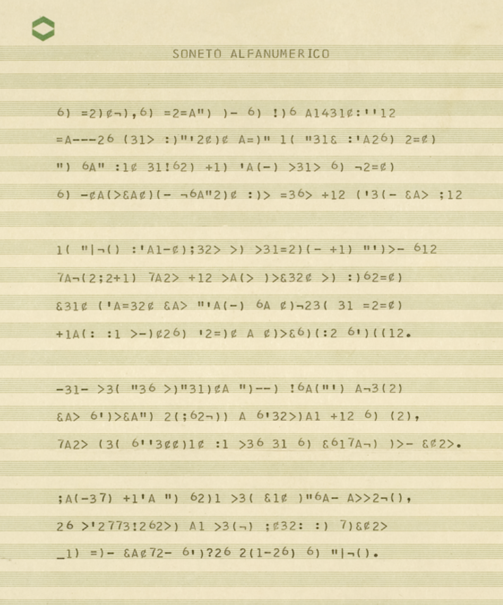

Erthos Albino de Souza · revista Código nº 1 · Salvador, 1974
Em 1974, um engenheiro de minas da Petrobras transformou um soneto de Mallarmé numa sequência de símbolos datilografados, usando Fortran e PL/1 como instrumento poético. Em 2026, recuperamos a tabela que ele usou — e descobrimos por que, entre tantos poemas possíveis, ele escolheu justo este.

Erthos Albino de Souza (1932–2000) foi um engenheiro de minas baiano que trabalhou na Petrobras e, em paralelo, se tornou um dos pioneiros internacionais da poesia feita com computador. A partir do fim dos anos 1960, influenciado pelos experimentos de Pedro Xisto no Canadá, passou a usar Fortran e PL/1 — linguagens de cálculo numérico de grandes empresas — como instrumento poético, submetendo texto verbal a processos de computação e combinatória.
Fundou e financiou sozinho a revista Código, publicada em Salvador entre 1974 e 1990 (12 números), um dos principais veículos da poesia experimental brasileira na esteira de Noigandres e Invenção, com colaborações de Augusto de Campos e Décio Pignatari. Antonio Risério descreveu o Soneto Alfanumérico como um texto em que letras e dígitos se combinam "em base permutatória" dentro da forma clássica do soneto.
O soneto-fonte é "Le vierge, le vivace et le bel aujourd'hui" (1885), de Stéphane Mallarmé — às vezes chamado simplesmente de "Le Cygne" pela crítica. Ele descreve um cisne preso num lago congelado: quer se libertar com um bater de asas, mas as penas estão presas na geleira transparente. O motivo da prisão é revelado no poema — ele não cantou a tempo "a região onde viver". No fim, resta apenas um fantasma imóvel, vestido pelo "exílio inútil".
cisne — o pássaro preso no gelo, incapaz de voar, símbolo tradicional do poeta tomado por paralisia criativa.
signo — homófono perfeito de cygne em francês. O poema sobre um cisne é, ao mesmo tempo, um poema sobre a própria natureza do signo linguístico, preso entre o que quer dizer e o que consegue dizer.
Esse trocadilho — cygne/signe — é apontado pela crítica mallarmeana como central ao soneto, não acidental (ver fontes ao final). É provavelmente por isso que Erthos escolheu justo este poema: um texto já obcecado pela ideia de linguagem-presa-em-signo era o candidato perfeito para virar, literalmente, uma sequência de signos alfanuméricos. A "geleira transparente" do poema original ganha um equivalente real — a tabela de substituição que aprisiona cada letra num símbolo fixo.
Acentos são removidos antes da substituição; maiúscula e
minúscula usam o mesmo símbolo. Vírgula, ponto, apóstrofo e hífen atravessam
a cifra sem mudar. k, w e z não ocorrem
no soneto de Mallarmé, então não têm símbolo atestado.
$ ruby soneto_alfanumerico.rb 1 100.0% Le vierge, le vivace et le bel aujourd'hui 2 100.0% Va-t-il nous déchirer avec un coup d'aile ivre ... 14 97.0% Que vêt parmi l'exil inutile le Cygne. TOTAL: 509/512 caracteres coincidem (99.4%)
A tabela vale sem exceção nas 14 linhas. Dos 3 caracteres que não fecham, dois são divergências do impresso de 1974 (versos 10 e 14) e o terceiro é limite do próprio alfabeto (verso 4, o "!" de "fui!", cujo glifo já está ocupado pela letra b) — detalhes em DECIFRACAO.md, seção 3.5.
| Mallarmé (1885) | Soneto Alfanumérico (1974) |
|---|
Isto é uma reconstrução da camada de substituição, obtida por engenharia reversa a partir da página publicada — não uma recuperação do programa Fortran/PL-1 original de Erthos, que não sobreviveu (ao menos não nas fontes que encontramos). Continuamos sem saber como Erthos chegou a essa tabela específica de 23 símbolos.
Também não encontramos, nas fontes disponíveis, nenhuma reconstrução publicada anteriormente dessa transformação em código executável — pelo que conseguimos apurar, este é o primeiro decodificador funcional do Soneto Alfanumérico a circular publicamente. Ficamos felizes em ser corrigidos se isso não for exato.
{kind=link}